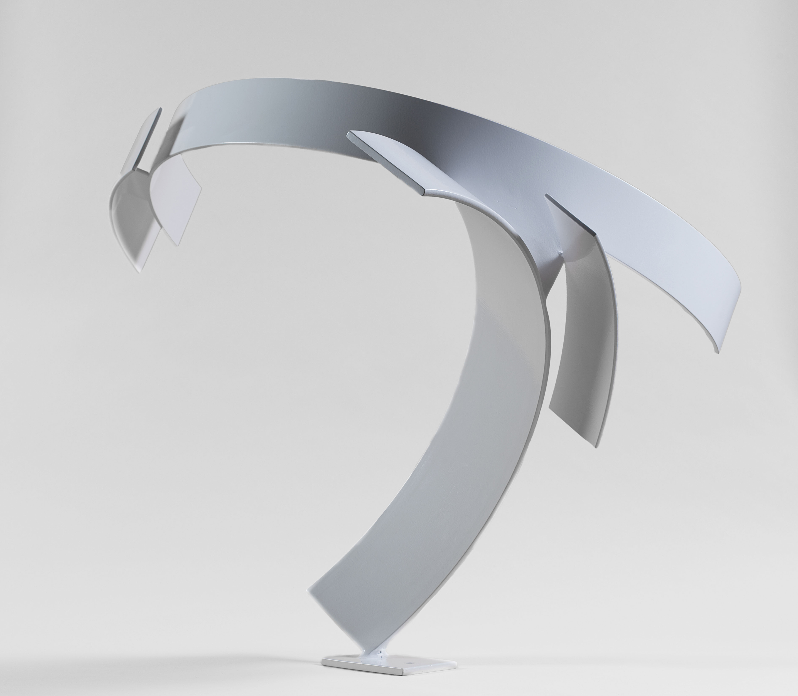

№ 01 · Calligraphie tridimensionnelle
Le geste, cintré.
Interprétation poétique d'alphabets et sémantique exprimés au moyen de lames d'acier cintrées composées en un équilibre parfait.
Certaines compositions sont sémantiques, d'autres sont issues de l'alphabet hébreu ou chinois. Après étude graphique et conceptuelle de la lettre ou du symbole, celle-ci est transposée en trois dimensions à l'aide de lames d'acier cintrées elliptiquement et soudées entre elles.
Le point d'équilibre est essentiel à la justesse du résultat et autorise de fortes tensions dues au déport des lames.
Format miniature10 — 15 cm
Format sculpture40 — 60 cm
Format monumental90 — 160 cm